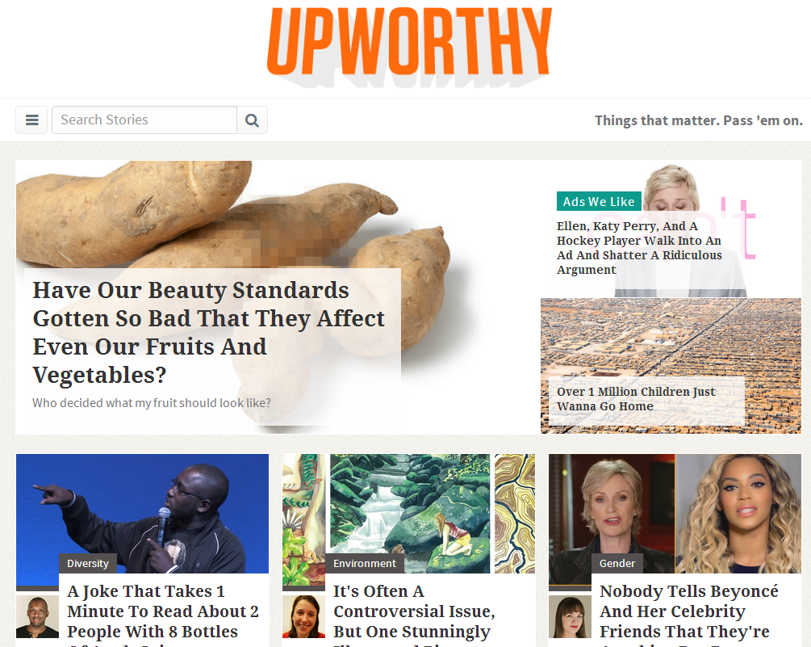
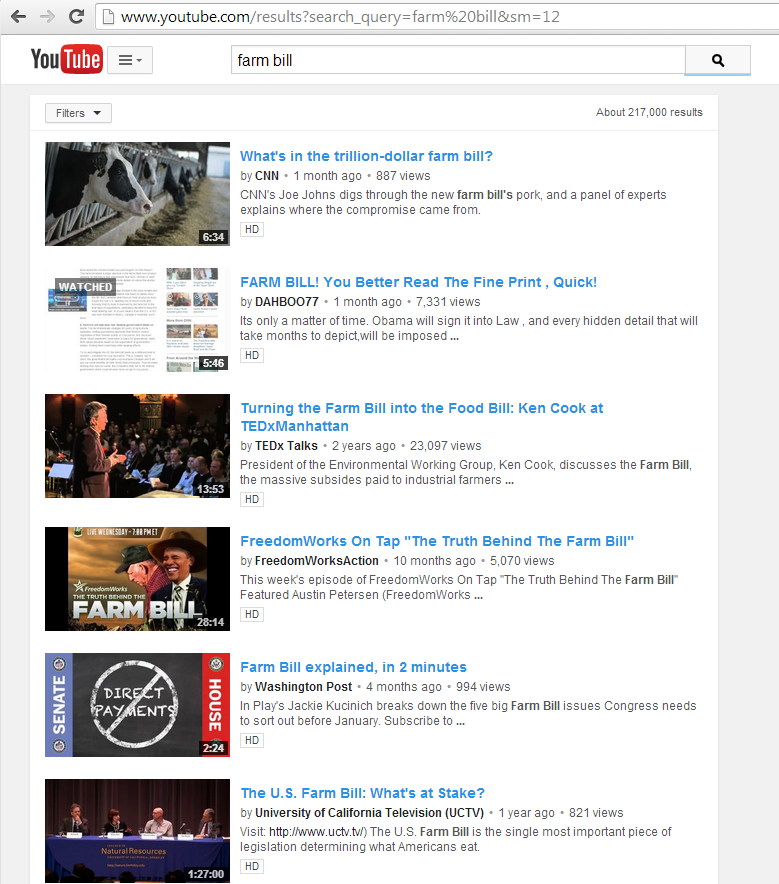
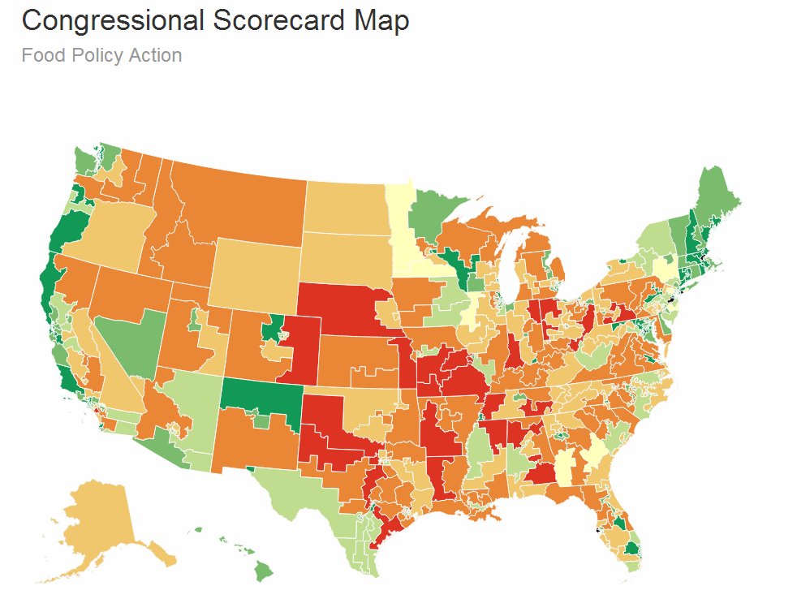
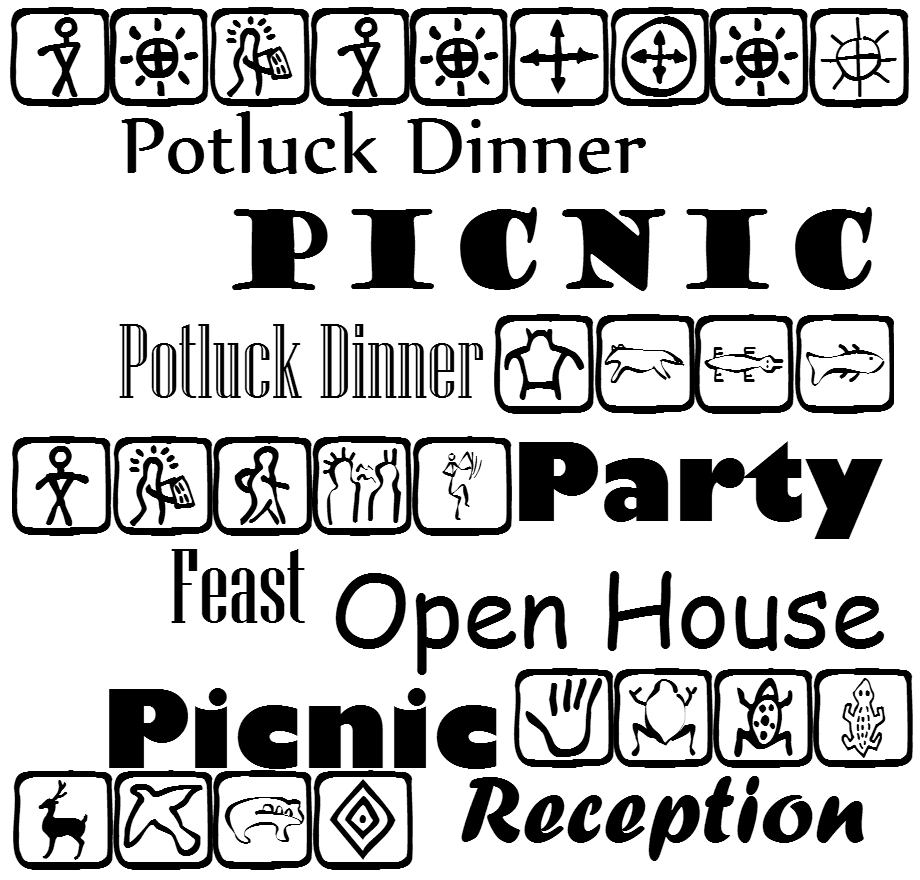

First of all: Are we UPWORTHY?
UPWORTHY content just has to be good.
It doesn't have to be by Jon Stewart

Does your organization produce video?

YouTube video doesn't have to be professionally-produced.
It just needs to be interesting.
Is your organization's database district-aware? Is it committee-aware?
- Has your organization been trained in social media?
- Do you do A/B testing?
- Do you analyze your Twitter, Facebook and website metrics?
A
/
B
Do you use modern data visualization?

Let's build this!Find key constituents from your website visitors
Does your organization bring people together?

The questions, again
- Are we UPWORTHY?
- Does your organization routinely produce video?
- Is your organization's database district-aware?
Is it committee-aware?
- Has your organization been trained in social media?
A/B Testing?
Metrics?
- Do you use modern data visualization?
- Does your organization bring people together?